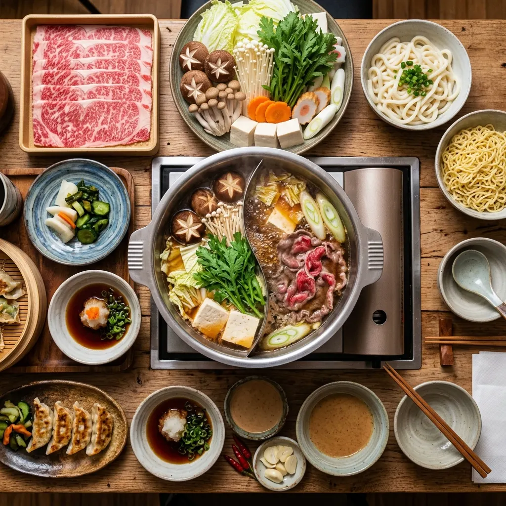

Consumer choice · Vietnam
Buffet menu choices
Two studies tested how the order of menu information affected intended calorie intake, perceived value and the choice of a higher-priced buffet tier.
Two experimental studies

- Study 1
- 257 respondents
- Study 2
- 147 respondents
- Design
- Menu-order experiment
Does menu order change a diner's choice?
Participants saw menu conditions with healthier options or price tiers presented in different orders. The analysis compared intended intake and estimated the odds of choosing a higher tier.
Lower intended intake came with a trade-off
Healthier-first menus reduced intended calorie intake in both studies. In Study 2, the reported premium-tier choice share fell from 52.4% to 23.8%.
Compare the menu conditions
Reported mean intended calorie intake. These are intentions measured in the study, not observed food consumption.
Reported means in the comparison condition.
Methods & development
Inside the research
Menu order, intended intake and tier choice
The two studies address different outcomes; perceived value is the reported mediation pathway.
Reported methods · project sourcesStudy 2 mediator
Perceived value
The reported indirect-effect analysis examines perceived value. Interpretation depends on mediation assumptions as well as randomized presentation.
Select a node to inspect its role.Arrows summarize contrasts and the mediation specification; the mediator itself was not randomized.
Download diagram
Move from intended choice to restaurant behavior
Test the menu intervention where diners order and eat.
Proposed extension · not performedObserved outcomes
Orders + plate waste
Record ordered tier, food served and food left using a consistent protocol. Define how estimated calories and waste are measured.
Select a node to inspect its role.Proposed workflow. No new data or model results are claimed.
Download diagram
Study plan
- Question
- Does healthier-first ordering change actual intake or waste without an unacceptable commercial trade-off?
- Design & unit
- Field experiment with the randomization unit fixed before recruitment.
- Measures & analysis
- Observe consumption or waste and spending; estimate contrasts with dependence at the assignment unit.
- Data & sample
- Requires restaurant cooperation, consistent measurement and participant information. Plan sample size from a meaningful primary effect, clustering and implementation loss.
- Decision gate
- Set the acceptable commercial trade-off before the trial. Do not substitute intended calories for observed consumption.
Menu design
The result gives operators a menu-order option to test, while showing why perceived value and premium-tier demand need to be considered together.
The studies measured stated choices and intended intake. They did not measure plate waste in an operating restaurant.
Methods & sources
- Study design
- Study 1: buffet/hotpot choice experiment, n = 257. Study 2: price-tier choice experiment, n = 147. The source describes a 2 × 3 between-subjects design and ordinal logistic analysis.
- Tier choice
- Higher-tier odds ratio: 0.52, meaning 48% lower odds, not a 48-point decrease in probability. Premium choice share changes from 52.4% to 23.8%.
- Mediation
- Reported indirect effect through perceived value: −0.339, 95% CI [−0.56, −0.15]. This helps interpret the commercial trade-off in the experimental conditions.